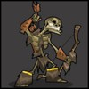
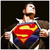

Remove me
Do you want to remove the text?
Лошадь
Домашняя лошадь — животное семейства непарнокопытных, одомашненный и единственный сохранившийся подвид дикой лошади, вымершей в дикой природе, за исключением небольшой популяции лошади Пржевальского.
Осёл
Домашний осёл (лат. Equus asinus asinus), или ишак, — одомашненный подвид дикого осла (Equus asinus), сыгравший важную историческую роль в развитии хозяйства и культуры человека и по-прежнему широко в хозяйстве многих развивающихся стран.
Кошка
Кошка, или домашняя кошка (лат. Felis silvestris catus), — домашнее животное, одно из наиболее популярных(наряду с собакой) «животных-компаньонов». Являясь одиночным охотником на грызунов и других мелких животных, кошка — социальное животное, использующее для общения широкий диапазон звуковых сигналов.

